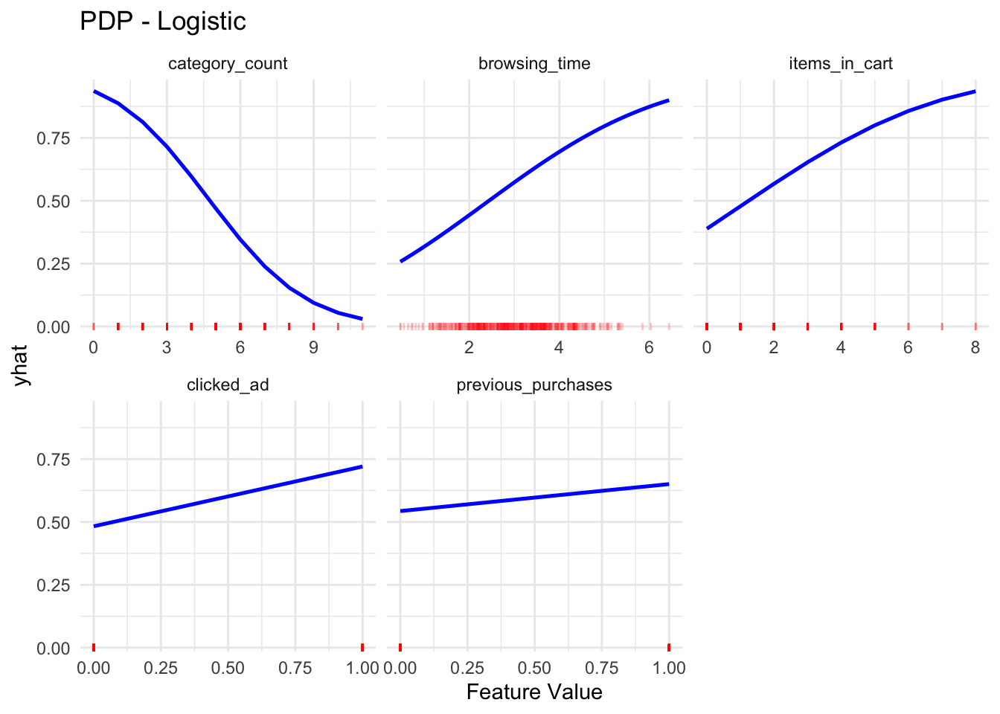
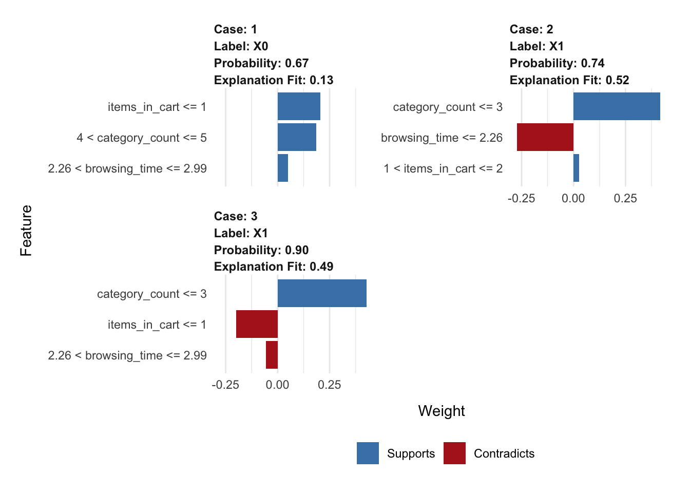

Code
# packages
library(ggplot2)
library(tidyverse)
library(broom)
library(dplyr)
library(tidyr)
library(pdp)
library(lime)
library(randomForest)
library(vip)We now move to construct a predictive model after simulating our dataset with important behavioral characteristics connected to online buying. Ou response variable buy being binary (1 = purchased, 0 = no purchase), we estimate the probability of purchase as a function of the six explanatory variables using a Logistic Regression model. It is a suitable option that models the log-odds of purchase as a linear mixture of the six characteristics, given that the outcome variable is binary. The coefficient predicted by the logistic model here could vary from the “ground truth” coefficients we used to simulated the dataset. Added random noise and sample variation cause this difference, which more genuinely represents uncertainty in a real-world data. We estimate how well the model recovers the underlying data-generating process by contrasting the projected coefficients with the known ground truth.
Before the modelling process, install all packages:
# packages
library(ggplot2)
library(tidyverse)
library(broom)
library(dplyr)
library(tidyr)
library(pdp)
library(lime)
library(randomForest)
library(vip)And load the dataset we simulated before:
set.seed(5293)
n <- 500
# Generate the features for the dataset
browsing_time <- rnorm(n, mean = 3, sd = 1) # hours
category_count <- rpois(n, lambda = 4) # integer count
clicked_ad <- rbinom(n, 1, prob = 0.35) # binary
items_in_cart <- rpois(n, lambda = 2) # integer count
device_type <- rbinom(n, 1, prob = 0.6) # 0 = desktop, 1 = mobile
previous_purchases <- rbinom(n, 1, prob = 0.25) # binary
noise <- rnorm(n, 0, 0.5)
# Simulate outcome
logit <- -1 +
0.8 * browsing_time -
0.6 * category_count +
1.2 * clicked_ad +
0.5 * items_in_cart +
0.4 * previous_purchases +
0.3 * device_type +
noise
p <- 1 / (1 + exp(-logit))
purchase <- rbinom(n, 1, p)
# Assemble data frame
sim_data <- data.frame(
browsing_time,
category_count,
clicked_ad,
items_in_cart,
device_type = factor(device_type, levels = c(0, 1), labels = c("desktop", "mobile")),
previous_purchases,
purchase
)
#head(sim_data)sim_data <- sim_data
# fit the logistic regression model
log_model <- glm(purchase ~ ., data = sim_data, family = "binomial")
summary(log_model)
Call:
glm(formula = purchase ~ ., family = "binomial", data = sim_data)
Coefficients:
Estimate Std. Error z value Pr(>|z|)
(Intercept) -1.11467 0.51565 -2.162 0.03064 *
browsing_time 0.84165 0.12942 6.503 7.85e-11 ***
category_count -0.72339 0.07769 -9.311 < 2e-16 ***
clicked_ad 1.61928 0.26507 6.109 1.00e-09 ***
items_in_cart 0.58558 0.09632 6.079 1.21e-09 ***
device_typemobile 0.07205 0.24024 0.300 0.76424
previous_purchases 0.76285 0.28375 2.688 0.00718 **
---
Signif. codes: 0 '***' 0.001 '**' 0.01 '*' 0.05 '.' 0.1 ' ' 1
(Dispersion parameter for binomial family taken to be 1)
Null deviance: 683.31 on 499 degrees of freedom
Residual deviance: 438.31 on 493 degrees of freedom
AIC: 452.31
Number of Fisher Scoring iterations: 5Based on the logistic model we generated, the summary result shows that statistically significant predictors include browsing_time, category_count, clicked_ad, items_in_cart, and previous_purchases. This means that these five feature have important impact in purchase behavior. However, device_type is not significant (p = 0.764), indicating that switching from desktop to mobile does not have a strong independent effect on the likelihood of purchase in this model. Signs of coefficients match the logic of the simulation (positive for most predictors, negative for category count), though values differ slightly due to added noise. Additionally, the residual deviance of 438.31, compared to the null deviance of 683.31, suggests that the model explains a substantial portion of the variability in the outcome. By adding these six predictors, the deviance reduced from 683.31 to 438.31, means that our features signigicantly improve the model’s predicting ability. The overall logistic model at this step can be written as:
\[\begin{align} \log\left(\frac{P(\text{purchase} = 1)}{1 - P(\text{purchase} = 1)}\right) &= -1.1147 + 0.8417 \cdot \text{browsing\_time} \\ &\quad - 0.7234 \cdot \text{category\_count} + 1.6193 \cdot \text{clicked\_ad} \\ &\quad + 0.5856 \cdot \text{items\_in\_cart} + 0.0721 \cdot \text{device\_type}_{\text{mobile}} \\ &\quad + 0.7629 \cdot \text{previous\_purchases} \end{align}\]
To further analysis the contribution of each individual predictors, we use the Added Variable Plot (AVP) to more fully considering the influences of other variables. By graphing the response residuals (after regressing out the other predictors) against the predictor residuals (after regressing it out from the other predictors as well), this diagnostic tool shows the partial link between the outcome and a chosen predictor.
library(tidyverse)
library(broom)
# numeric predictors
numeric_vars <- sim_data %>%
select(where(is.numeric)) %>%
select(-purchase) %>%
colnames()
# compute AVP residuals and SD of fit per feature
avp_list <- lapply(numeric_vars, function(var) {
other_vars <- setdiff(numeric_vars, var)
model_y <- glm(as.formula(paste("purchase ~", paste(other_vars, collapse = " + "))),
data = sim_data, family = "binomial")
res_y <- resid(model_y)
model_x <- lm(as.formula(paste(var, "~", paste(other_vars, collapse = " + "))),
data = sim_data)
res_x <- resid(model_x)
avp_fit <- lm(res_y ~ res_x)
fit_vals <- predict(avp_fit)
sd_fit <- sd(fit_vals)
tibble(
feature = var,
res_x = res_x,
res_y = res_y,
fit = fit_vals,
sd_fit = sd_fit
)
})
# Combine into dataframe
avp_df <- bind_rows(avp_list)
# Order by descending SD
sd_order <- avp_df %>%
group_by(feature) %>%
summarise(sd_fit = first(sd_fit)) %>%
arrange(desc(sd_fit))
avp_df$feature <- factor(avp_df$feature, levels = sd_order$feature)
# Plot
ggplot(avp_df, aes(x = res_x, y = res_y)) +
geom_point(alpha = 0.4) +
geom_smooth(method = "lm", color = "blue", linewidth = 0.8) +
facet_wrap(~ feature, scales = "free_x") +
labs(
title = "Added Variable Plots",
x = "Feature residual (unexplained by other predictors)",
y = "Purchase residual (unexplained by other predictors)"
) +
theme_minimal()`geom_smooth()` using formula = 'y ~ x'After considering all additional factors in the logistic regression model, the AVPs suggests the marginal influence of each predictor on the binary response variable purchase. Every panel displays the residual of a specified characteristic (also adjusted for other variables) plotted against the residual of purchase (after eliminating the influence of other predictors). A prominent linear trend in the graphic indicates that the related predictor significantly affects the model.
The graphs reveal that category_count has a substantial negative linear correlation with the response residuals, suggesting a notable negative link with the likelihood of purchase even after other attributes are controlled. All three variables, browsing_time, clicked_ad, and items_in_cart, show clear positive linear trends consistent with the idea that more browsing, clicks, and cart activity usually raise the probability of purchase. The plot for previous_purchases shows a weaker and less clear trend, suggesting its marginal contribution is smaller, which is consistent with its less significant coefficient in the logistic regression we got above at fitting the model. At last, device_type would fit its high p-value in the regression summary and may not be as important. These graphs show generally where the linear model fits well and help visually verify the significance of the strongest predictors.
We now look at Partial Dependence Plots (PDPs) to investigate further the marginal influence of each feature throughout its whole range—holding all other variables constant. PDPs assist us to better understand how changes in individual feature values affect the estimated purchase probability of the model and are especially good for visualising possible nonlinear connections.
# numeric variables (excluding target)
numeric_vars <- sim_data %>%
select(where(is.numeric)) %>%
select(-purchase) %>%
colnames()
# Compute PDPs
pdp_list <- lapply(numeric_vars, function(var) {
pd <- pdp::partial(
object = log_model,
pred.var = var,
train = sim_data,
prob = TRUE
)
colnames(pd) <- c("x", "yhat") # rename columns
pd$variable <- var
return(pd)
})
pdp_df <- bind_rows(pdp_list)
# Compute standard deviation of yhat per variable
sd_order <- pdp_df %>%
group_by(variable) %>%
summarise(sd_yhat = sd(yhat)) %>%
arrange(desc(sd_yhat))
# Reorder variable levels for facet_wrap
pdp_df$variable <- factor(pdp_df$variable, levels = sd_order$variable)
# Prepare rug data (long format)
rug_df <- sim_data %>%
select(all_of(numeric_vars)) %>%
pivot_longer(cols = everything(), names_to = "variable", values_to = "x")
rug_df$variable <- factor(rug_df$variable, levels = sd_order$variable)
# Final PDP plot with rug
ggplot(pdp_df, aes(x = x, y = yhat)) +
geom_line(color = "blue", linewidth = 0.9) +
geom_rug(data = rug_df, aes(x = x),
sides = "b", color = "red", alpha = 0.2, inherit.aes = FALSE) +
facet_wrap(~ variable, scales = "free_x") +
labs(title = "PDP - Logistic",
x = "Feature Value") +
theme_minimal()
These plots offer valuable insights into model behavior and feature effects. Starting with category_count, we see a significant negative nonlinear association with purchase probability, those who browse several product categories are less likely to convert. Users lazily perusing several sorts of products may show decision weariness or a lack of buying intent. On the other hand, browsing_time reveals a consistent and obvious upward trend suggesting that people who spend more time on the website are more likely to buy. This probably indicates more involvement and thought. Likewise, items_in_cart is strongly positively correlated with purchase likelihood, hence supporting the idea that consumers with more items in their cart are nearer to complete the purchase. clicked_ad shows a positive increase in likelihood, implying that ad-clicking activity is a significant indicator of conversion intention. Finally, past_purchases reveals a little upward slope, which consistent with usual buyer retention trends, returning consumers are somewhat more inclined to buy again.
However, although these worldwide techniques help to grasp typical impacts throughout the whole dataset, they cannot clarify why a certain case got its distinctive forecast.
Based on the results from the model and the two types of plots we have already generated, we have gained insight into the overall influence and trends of each individual feature on the predicted purchase probability. However, although we can gain the insights through these two plots we have already used, they fail to explain why a specific instance received its particular prediction. To address this limitation, we apply LIME, which provides localized explanations for individual predictions by approximating the model’s behavior near a given instance using a simple, interpretable model. By doing so, LIME allows us to uncover which specific features drove the prediction for each user, and in what direction. Here we choose to analysis the first three observation as our instance and perform the LIME plot on them.
set.seed(5293)
sim_data$purchase <- as.factor(sim_data$purchase)
model_type.glm <- function(x, ...) 'classification'
predict_model.glm <- function(x, newdata, type, ...) {
preds <- predict(x, newdata = newdata, type = "response")
data.frame(`1` = preds, `0` = 1 - preds)
}
# test train split(choose the first three observations as our instances)
test_data <- sim_data[1:3, ]
train_data <- sim_data[-(1:3), ]
# Fit logistic regression on training data
log_model <- glm(purchase ~ ., data = train_data, family = "binomial")
# explainer
explainer <- lime::lime(
x = train_data %>% select(-purchase),
model = log_model,
bin_continuous = TRUE
)
# Perform LIME on the test instances
explanation <- lime::explain(
x = test_data %>% select(-purchase),
explainer = explainer,
n_labels = 1,
n_features = 3
)
print(explanation)# A tibble: 9 × 13
model_type case label label_prob model_r2 model_intercept model_prediction
<chr> <chr> <chr> <dbl> <dbl> <dbl> <dbl>
1 classificati… 1 X0 0.670 0.132 0.377 0.818
2 classificati… 1 X0 0.670 0.132 0.377 0.818
3 classificati… 1 X0 0.670 0.132 0.377 0.818
4 classificati… 2 X1 0.743 0.520 0.327 0.499
5 classificati… 2 X1 0.743 0.520 0.327 0.499
6 classificati… 2 X1 0.743 0.520 0.327 0.499
7 classificati… 3 X1 0.902 0.494 0.386 0.557
8 classificati… 3 X1 0.902 0.494 0.386 0.557
9 classificati… 3 X1 0.902 0.494 0.386 0.557
# ℹ 6 more variables: feature <chr>, feature_value <dbl>, feature_weight <dbl>,
# feature_desc <chr>, data <list>, prediction <list>plot_features(explanation)